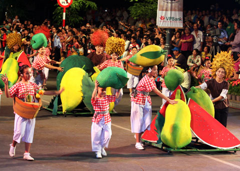

BƯỚC 1
Trong bước 1 này, điều quan trọng nhất là cần tập trung xác định được loại hoạt động mà hình muốn tìm kiếm thông tin.
Có rất nhiều hoạt động đang được tổ chức hàng ngày ở trên cả địa phương. Chúng bao gồm những hoạt động giải trí như: hội sách, Festival,...

Hình ảnh tại Hội sách 2015 (Nguồn : Internet)
Cũng có nhiều hoạt động học tập, gia tăng tri thức như: các hội thảo, seminar học thuật, các cuộc thi học thuật,...

Hình ảnh tại một Seminar (Nguồn : Internet)
Xác định rõ mục đích ngay từ đầu sẽ khiến bạn tìm kiếm thông tin nhanh hơn, sàng lọc thông tin tốt hơn
BƯỚC 1
Hình ảnh tại Hội sách 2015 (Nguồn : Internet)
Hình ảnh tại một Seminar (Nguồn : Internet)